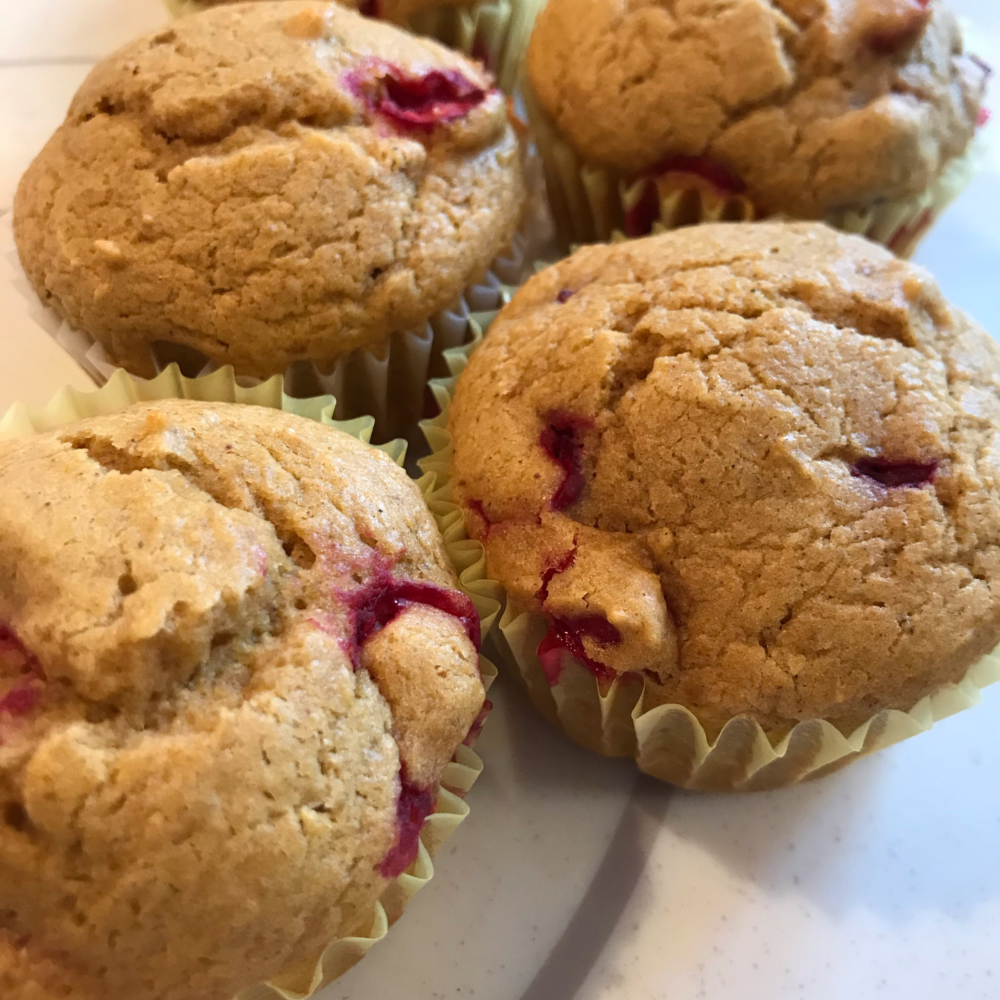

Cranberry Pumpkin Muffins

Yummy Cranberry Pumpkin Muffin
These yummy pumpkin muffins are perfect for the Thanksgiving table! Substitute toasted pumpkin seeds or dried cherries for the cranberries, if you wish.
Ingredients
- 2 cups all-purpose flour
- ¾ cuo brown sugar, packed
- 2 teaspoon baking powder
- ¼ teaspoon baking soda
- ½ teaspoon salt
- 1 teaspoon ground cinnamon
- ¼ teaspoon ground ginger
- ⅛ teaspoon ground cloves
- ⅛ teaspoon ground nutmeg
- 1 cup canned unsweetened pumpkin puree
- 2 eggs, lightly beaten
- ½ cup butter, melted
- ¼ cup buttermilk
- 2 teaspoon vanilla extract
- 1 cup dried, sweetened cranberries
Steps
- Preheat oven to 400 degrees F (200 degrees C). Grease or place paper muffin cups in a 12 cup muffin tin.
- Mix the flour, brown sugar, baking poeder, baking soda, salt, cinnamon, ginger, cloves, and nutmeg together ina mixing bowl.
- Beat the canned pumpkin, eggs, butter, buttermilk, and vanilla together in another large mixing bowl. Gradually beat in the flout mixture until well blended. Stir in the dried cranberries until evenly blended. Spoon batter into muffin tins about 3/4 full.
- Bake in preheated oven until a toothpick inserted in the middle of a muffin comes out clean, 20 to 25 minutes. 3 minutes before turning out from pan. Serve warm or at room temperature.